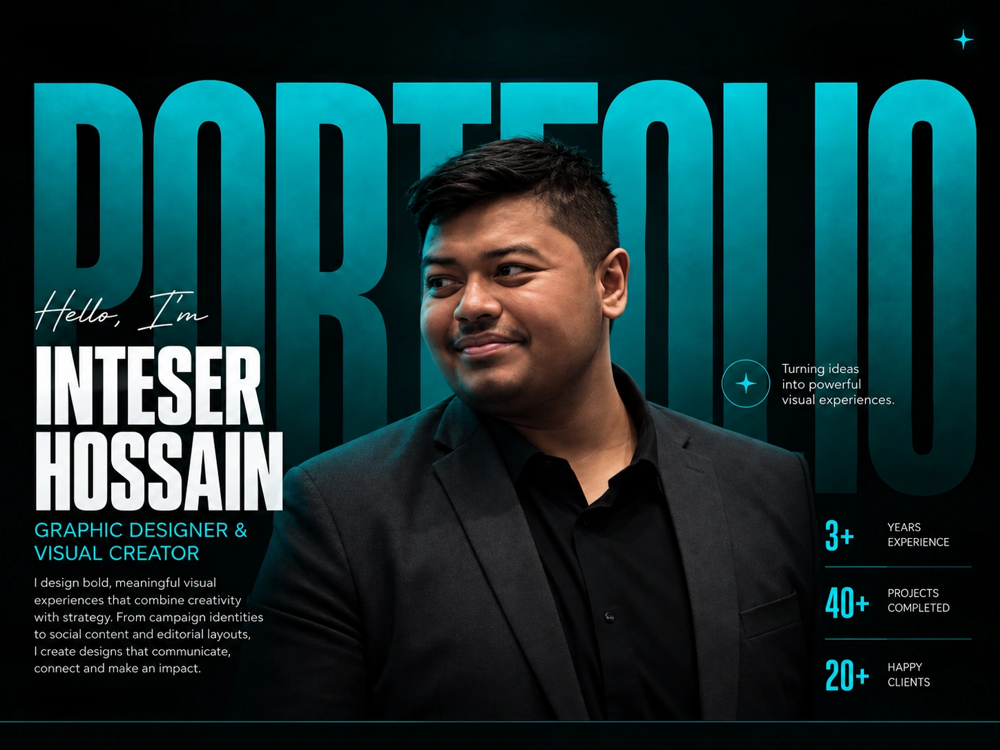
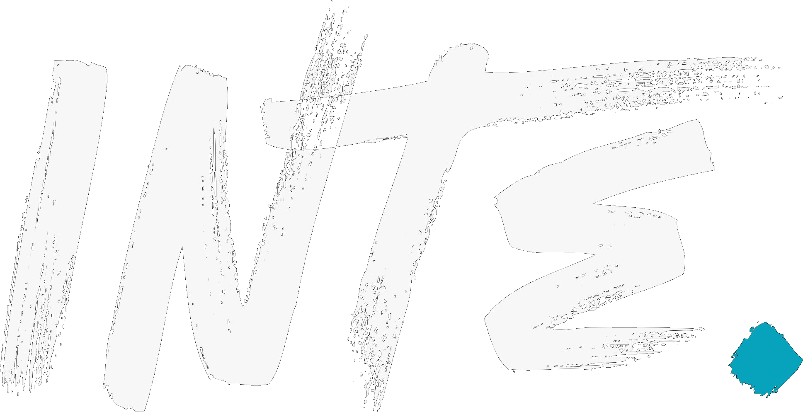

Campaign Systems
Full event communication from launch and registration through speakers, deadlines, results and finale content.

PROFILE / SELECTED PRACTICE
I’m Inteser Hossain, a visual and graphic designer creating campaign systems, social communication, editorial layouts and digital interfaces. My strongest work is built as a repeatable visual language — not as isolated posts.
Campaign identity · Social communication · Editorial design · UI/Web · Typography · Photo compositing · Motion
Full event communication from launch and registration through speakers, deadlines, results and finale content.
Dense schedules, rules, CTAs, sponsors and event details organized so the viewer knows what matters first.
Publication layouts, recurring content systems, sports graphics and audience-focused social communication.
Landing pages, hero systems, entertainment interfaces and long-form web composition.
Large display type, portrait cutouts, layered imagery, texture, color integration and cinematic framing.
Short loops, animated poster studies and campaign motion designed to behave as moving visual work.
PROJECT INDEX
Select any project below to jump directly to its full section.
01 / CAMPAIGN SYSTEMS
These projects are shown as connected communication systems: launch, registration, information, speakers or judges, deadlines, results and event-day proof.
PROJECT 01
Competition campaign systems · 2025 → 2026
Role Visual / Campaign Design
Focus Multi-phase communication, hierarchy, system evolution
Tools Photoshop · Canva
One competition, two visual systems, and a long communication lifecycle.
The 2025 system uses a cleaner red-white corporate language across judges, workshops, university roadshows and competition information. The 2026 Intra Round shifts into a darker red-black system built around urgency, countdowns, registration and round progression.
IN PRACTICE
Selected event photography is used as context — evidence of where the campaign lived, not as a replacement for the design work.
PROJECT 02
Business competition · visual identity across a full lifecycle
Role Campaign / Social Design
Focus Portrait systems, countdowns, workshops, partner communication
Tools Photoshop · Canva
A neon blue-purple competition language built to stay recognizable from roadshow to grand finale.
The system moves through awareness, registration, workshops, judges, partner announcements, countdowns, finalist communication and winner content while retaining a consistent visual identity.
EVENT CONTEXT
PROJECT 03
Event campaign · information design
Role Event / Information Design
Focus Speakers, schedules, sessions, partners, registration
Tools Photoshop · PowerPoint
A case study in making dense event information feel coherent.
BRAINIACS combines speaker-led communication with schedules, FAQs, partner messaging, registration pressure and session-level information. The visual system keeps those different content types connected.
EVENT CONTEXT
PROJECT 04
Recruitment campaign identity · recurring editions
Role Campaign / Social Design
Focus Registration, assessment, recruitment communication
Tools Photoshop · Canva
A recurring recruitment identity that changes season without losing recognition.
The Summer system uses a vivid blue digital language; later recruitment communication moves toward darker green while retaining the same need for clear status updates and repeatable announcement formats.
EVALUATION ENVIRONMENT
02 / EDITORIAL & CONTENT SYSTEMS
This chapter shows how the same design thinking moves from publication layouts to sports graphics, cultural communication and cybersecurity event material.
PROJECT 05
Editorial / publication design
Magazine-like covers, newsletter structures and feature-led storytelling under one publication identity. The emphasis shifts from promotion to readability, pacing and information density.
PROJECT 06
Sports social media system
A recurring blue-yellow content language built around portrait cutouts, bold labels, match communication and team identity.
PROJECT 07
A quieter collection showing range beyond high-energy competition campaigns through illustration, restrained typography and culturally specific visual language.
PROJECT 08
A compact cybersecurity communication set using a black-red visual language across identity, invitation and speaker/guest materials.
03 / DIGITAL & EXPERIMENTAL
Interface studies, entertainment-led web concepts, experimental typography and motion reveal the more personal side of my visual practice.
PROJECT 09
Automotive · long-form UI / web visual design
Focus Hero composition, brand story, product sections, long-form scroll
Tools Figma · Photoshop
PROJECT 10
Concept interfaces using oversized display type, character art and strong entertainment-first calls to action across Call of Duty, Spider-Man and Venom.
PROJECT 11
Character-led compositions exploring high contrast, oversized typography, color, texture and cinematic framing.
04 / MOTION STUDIES
Short-form animation studies and visual loops built around atmosphere, typography, interface movement and digital storytelling. Videos are muted, looped and pause when off-screen.
05 / DESIGN IN PRACTICE
The work also lives in event halls, workshops, evaluation rooms and team environments. These photographs are supporting context for leadership, execution and collaboration.
Visual campaign systems, event technology coordination, and mentoring junior members through design and technical support.
06 / COMPLETE ARCHIVE
Flagship case studies above are deliberately edited. This archive keeps the broader body of finished visual work accessible without forcing every variation into the main narrative.
07 / ABOUT
I build clear, repeatable visual systems for real communication needs — and I bring a Computer Science background to the way I structure, refine and execute them.
BIZ BEE · BRAC University Business Club
Jul 2024–Present
BRAC University · 2023–Present
CGPA: 3.76 / 4.00
Typography · Layout · Visual hierarchy · Photo compositing
Canva · PowerPoint
SELECTED WORK / END
A selection of campaign, editorial, social, experimental, motion and interface design work built around strong hierarchy, repeatable systems and audience-focused visual communication.
CONNECT / VIEW ONLINE
For collaborations, design opportunities, project conversations or a closer look at my background, use the links below.

Visual & Graphic Designer · Campaign Systems · Social Media · UI/Web Design